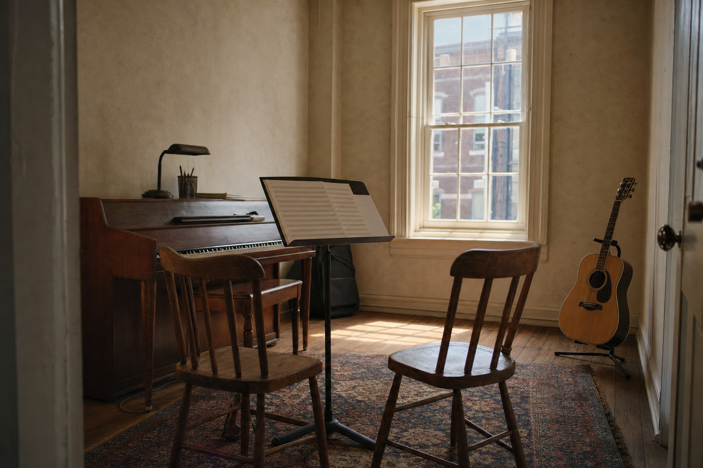
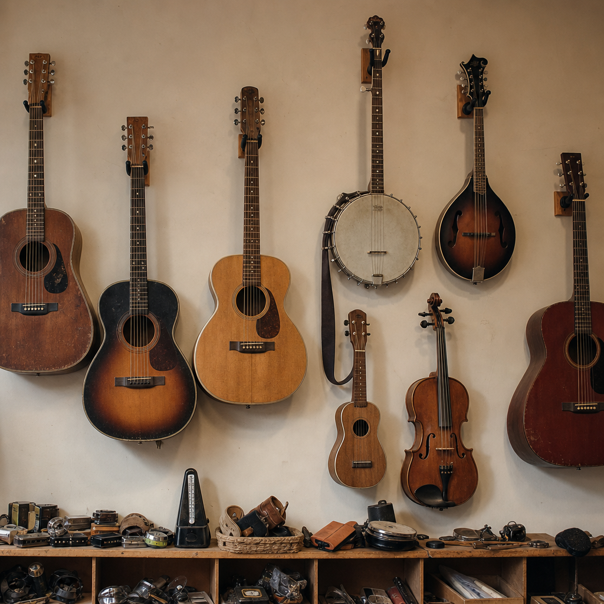
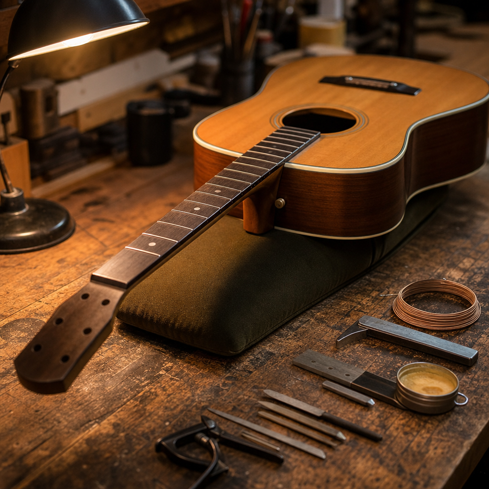
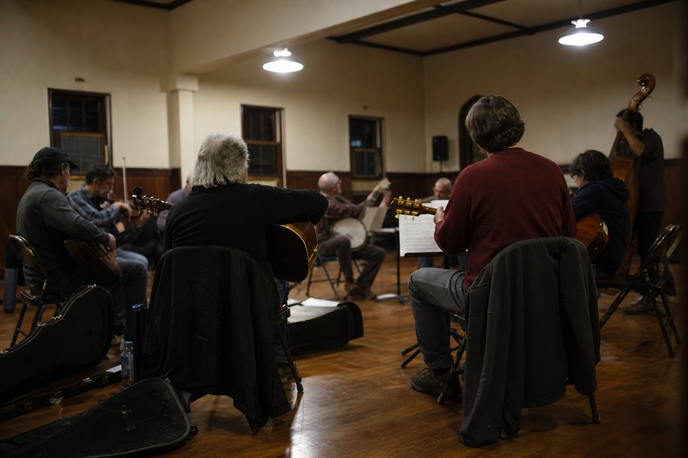

A school of music for learning by ear.
Lessons and classes for all ages, an instrument shop and repair bench, and a room where people play together. Three things, one door, on West Beverley Street.

The school.
Thirteen instruments and voice, taught aurally, for beginners through to players who have been at it for decades.
- Private lessons, all ages and levels
- Voice, guitar, piano, bass, percussion
- Banjo, fiddle, mandolin, ukulele, accordion
- Trumpet, trombone, saxophone
- Musikgarten for babies, toddlers and pre-schoolers
- Adult group classes and kids group classes

The shop.
Instruments on consignment, so the inventory changes constantly, plus a bench for repairs and setups. Come find a new instrument, or make an old one sing again.
- Consignment instruments, stock changes weekly
- Repairs and setups
- Strings, reeds, stands and accessories
- Sell your instrument on consignment

The stage.
A room for concerts, residencies and the regular sessions that are the reason half our students found us. All welcome, bring your instrument.
Bluegrass JamEvery 2nd Sunday
Irish Session at Marino's Lunch1st + 3rd Thursday, 7 to 9pm
Artist in residenceConcerts and workshops
